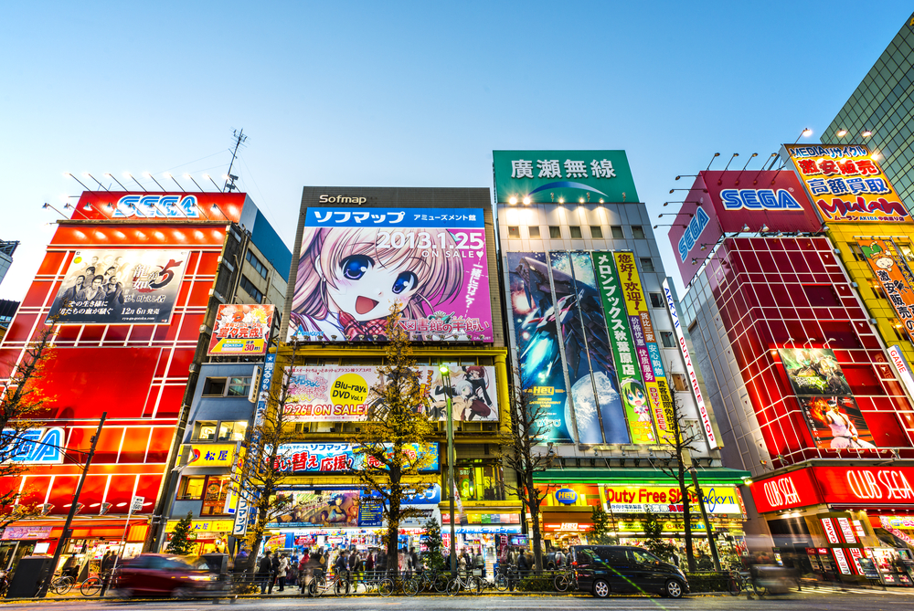
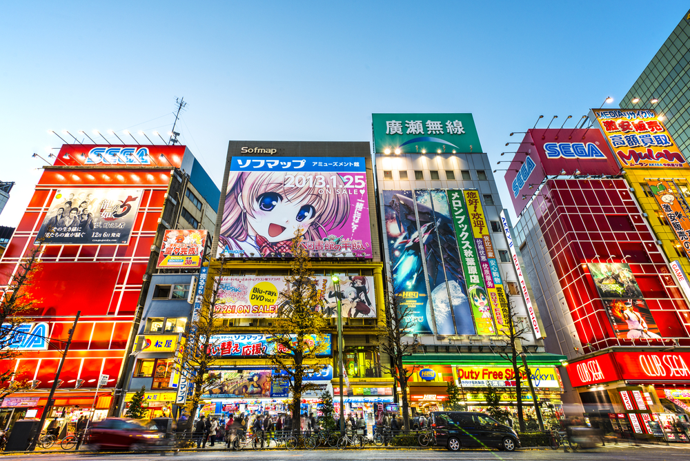

Paris, France
Experience the city of love with its iconic landmarks, rich history, and exquisite cuisine.
Discover amazing destinations and travel experiences
Experience the city of love with its iconic landmarks, rich history, and exquisite cuisine.

Explore the Eiffel Tower, the Louvre, and more! Enjoy a cultural journey.

Immerse yourself in Japanese culture with ancient temples, traditional gardens, and serene landscapes.

Tokyo: A vibrant metropolis where ancient traditions meet futuristic innovation. Explore neon-lit skyscrapers, serene temples, and bustling markets in this dynamic city that never sleeps.
 

Tokyo, Japan's bustling capital, is a global hub of culture, fashion, and technology. Explore diverse neighborhoods, from the trendy streets of Shibuya and Harajuku to the historic district of Asakusa. Discover world-class museums, Michelin-starred restaurants, and unique shopping experiences.

Sapporo: A perfect blend of urban excitement and natural beauty. Discover the charm of Hokkaido's largest city.
Okinawa: Japan's tropical paradise. Discover pristine beaches, turquoise waters, and vibrant coral reefs in this island getaway.

Experience a unique blend of Japanese and Ryukyuan culture in Okinawa. Explore ancient castles, enjoy traditional music and dance, and discover the islands' fascinating history.
From snorkeling and diving to hiking and island hopping, Okinawa offers a wealth of outdoor adventures. Explore stunning natural landscapes and discover hidden gems.
Switzerland: A land of breathtaking alpine scenery. Discover majestic mountains, pristine lakes, charming villages, and world-class hiking trails.
Rome: The Eternal City. Explore ancient ruins like the Colosseum and Roman Forum, and walk in the footsteps of emperors and gladiators.
Venice: The Floating City. Explore a magical world of canals, gondolas, and stunning architecture in this unique Italian gem.